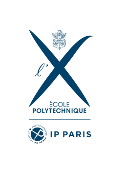

Sept. 2026
École Polytechnique · M2 Data Science
Master 2 Data Science à l’Institut Polytechnique de Paris : Machine Learning, Deep Learning, GNN, LLM et Computer Vision.
Master 2 in Data Science at Institut Polytechnique de Paris: Machine Learning, Deep Learning, GNNs, LLMs and Computer Vision.
